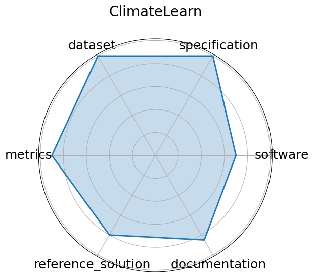

Date: 2023-07-19
Name: ClimateLearn
Domain: Climate Science; Forecasting
Focus: ML for weather and climate modeling
Keywords: medium-range forecasting, ERA5, data-driven
Task Types: Forecasting
Metrics: RMSE, Anomaly correlation
Models: CNN baselines, ResNet variants
Citation:
Tung Nguyen, Jason Jewik, Hritik Bansal, Prakhar Sharma, and Aditya Grover. Climatelearn: benchmarking machine learning for weather and climate modeling. 2023. URL: https://arxiv.org/abs/2307.01909, arXiv:2307.01909.
bibtex: ``` @misc{nguyen2023climatelearnbenchmarkingmachinelearning,
title={ClimateLearn: Benchmarking Machine Learning for Weather and Climate Modeling},
author={Tung Nguyen and Jason Jewik and Hritik Bansal and Prakhar Sharma and Aditya Grover},
year={2023}, eprint={2307.01909},
archivePrefix={arXiv},
primaryClass={cs.LG},
url={https://arxiv.org/abs/2307.01909}}
```
Ratings:
Software:
Rating: 5
Reason: Quickstart notebook makes for easy usage
Specification:
Rating: 5
Reason: Task framing medium-range climate forecasting , input/output formats, and evaluation windows are clearly defined; benchmark supports both physical and learned models with detailed constraints.
Dataset:
Rating: 5
Reason: Provides standardized access to ERA5 and other reanalysis datasets, with ML-ready splits, metadata, and Xarray-compatible formats; versioned and fully FAIR-compliant.
Metrics:
Rating: 5
Reason: ACC and RMSE are standard, quantitative, and appropriate for climate forecasting; well-integrated into the benchmark, though interpretation across domains may vary.
Reference Solution:
Rating: 0
Reason: The benchmark is geared for CNN architectures, but no specific model was mentioned.
Documentation:
Rating: 5
Reason: Explained in the benchmark’s paper.
Average Rating: 4.167
Radar Plot: 